AFRICA
Sub-Saharan Africa has made significant progress on social, political, and economic fronts since the turn of the 21st century.
The region’s levels of extreme poverty have decreased since 1999, with expanded social policies also improving health and education services—including those targeting women and girls. Africa is developing more robust manufacturing and service industries and is now home to a flourishing middle class. There has been a dramatic increase in the number of free and fair elections. The private sector is growing in agriculture, telecommunications, finance, retail trade, housing, and construction. The African Union’s “Agenda 2063” was
adopted in 2013, and countries are already making progress on its goal to “optimize use of Africa’s resources for the benefits of all Africans.”
Indeed, one of the region’s major challenges will be to ensure these advances benefit the many. Countries in Africa are operating at different speeds: Some are growing strongly and integrating with the global economy. Others remain stuck in chronic poverty, conflict, and other crises.
In many countries, women’s participation in decision-making remains very low. Radicalization threatens to reverse development gains made in Somalia, Mali, and elsewhere, particularly appealing to young people without adequate jobs or skills. Climate change and natural and man-made disasters risk undoing years of development. El Niño is contributing to drought in Southern Africa, and flooding and the spread of water-borne diseases in East Africa.
Whatever the challenges and opportunities, UNDP works with African governments, businesses, communities, and regional organizations, to help achieve the Sustainable Development Goals.
